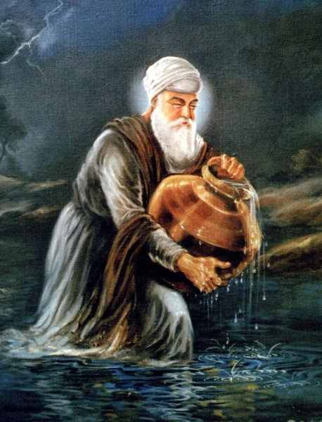

Sikhism


|  |
Mother Name: Mata Bakht Date of Birth: 23 May, 1479 Age: 95 years Place of Birth: Basarkay, Amritsar Wife: Mata Mansa Devi Children: Bhai Mohan , Bhai Mohri , Bibi Dani , Bibi Bhani Guruship: 16 April , 1552 - 16 September, 1574: 22 years Joti-jot : 16 September, 1574
|
Guru Amar Das Ji was born in 1479 at Basarke village in Amritsar District. He was the eldest son of his parents, Bhai Tej Bhan and Mata Lakhmi. He was married, at the age of 24, to Mansa Devi who gave birth to two sons, Mohan and Mohri and two daughters, Bibi Dani and Bibi Bhani. He was a Vaishnava but when he came in contact with Guru Angad, and became his disciple. He served the Guru with such zeal and reverence that Guruship was bestowed upon him in 1552 A.D. at the age of 73 Years. Then he went to Goindwal to live there as ordained by Guru Angad Dev Ji. Guru Angad’s sons were upset because they claimed that after their father, they were the legitimate heirs to Guruships. Datu, the son of Guru Angad, was for a while, at enmity with Guru Amar Das. Once he proclaimed himself a Master at Khadur, but he was not accepted. Under Guru Amar Das’s strict dictum, it was mandatory that all persons, high or low, rich or poor, Brahmans or Sudras, king or the commoner, and Hindus or Muslims, must sit in the same row as equals to dine in the Guru’s langar (Kitchen). This had upset the Brahmans very much and they were on the search of an opportunity to rectify this situation. Upon their support, Datu proceeded to Goindwal where the Guru was stationing.
Guru Amar Das was sitting on his religious throne and was delivering instructions to the congregation. Datu came along with a large number of his companions and kicked the Guru, who fell down the platform. Datu took possession of the platform and proclaimed himself as the Guru. But Amar Das only knelt down and began rubbing Datu’s feet in deep reverence and said, “Sir, my flesh and bones are old and hard; it must have hurt your foot.” After this Guru left Goindwal and went to his village Basarke. He confined himself in a house outside the town without letting anybody know about his whereabouts. The Sikhs were very much distressed at losing sight of their Guru. They searched all over but could not find him anywhere. Under the leadership of Bhai Buddha, they prayed and then let Guru’s mare loose and anxiously followed it for a short distance. The mare made her way to the Guru’s house in Basarke, and stood before his door. It was written on the door, “Whoever openeth this door is no Sikh of mine, nor I am his Guru.” They did not open the door, but made an opening in the rear wall and made supplication before the Guru. The Guru could not disregard the love and devotion of his Sikhs and returned to Goindwal. The Guru’s return was celebrated with illuminations, rejoicing and feasting.
Guru Amar Das purchased some land in Goindwal and laid the foundation of a Bawli (a well with descending steps) in 1559. All Sikhs joined in the work of digging the Bawli. Guru’s free Kitchen (Guru ka Langar) which was started by Guru Nanak and developed by Guru Angad, was further strengthened by Guru Amar Das. It was the injunction of Guru Amar Das that none would have his audience unless he had first eaten from the Langar. The Guru intended to remove the caste restrictions. When Raja Haripur or even Akbar, the Mughal Emperor of India, came to see the Guru, they had to sit with common people and dine with them before they could have audience with the Guru. One day, a rich Mussalman horse-dealer named Allahyar came to the Guru merely to see him. But he became the Guru’s slave when the shining glance fell on him and the Guru remarked, “Thou art Allah’s yar!” (the friend of Allah). Ah! it is difficult to be His (God) friend. Come, I will make you the slave of God!” Allahyar entered discipleship. Later, Allahyar was made in charge of the first Manji (Diocese) of the 22 Manjis that were set up by Guru Amar Das to spread the fragrance of Nam.
Guru’s eldest daughter, Bibi Dani (also known as Sulakhni) was married to Rama who was a zealous Sikh. He used to work in Guru’s Kitchen and administer to the needs of the pilgrims. The other daughter, Bibi Bhani was very religious from the very childhood. When she was of marriageable age, her mother reminded the Guru that it was time to search for a match for her. The Guru ordered the search. Bibi Bhani’s mother saw a young person standing outside and she said, “Search for a boy like him.” The Guru heard her remarks and exclaimed, “He is his own parallel, for God had made none other like unto him.” The young man thus chosen was Jethaji (who became Guru Ram Das later). At the time of marriage, the bridegroom was asked by the Guru to choose a gift for himself, as it was customary to do so. Jethaji replied, “Sir, bless me with the gift of Hari Nam.” After his marriage, he visited his parents with his noble bride; but he could not stay as he would die if separated from his master. So he returned to Goindwal, and lived at his Master’s feet.
The status of women in Hindu society at that time was very low. When the husband died, the wife either voluntarily burnt herself on the pyre of her husband or was thrown into the fire without her consent. The woman who did perform this act was called Sati (truthful). Guru Amar Das carried out a vigorous campaign against the practice of Sati. He gave special attention to the improvement of the status of women and thus prohibited this practice and preached in favor of widow marriage. The Guru’s followers increased considerably. Steps were taken to organize the scattered Sangat into a unified whole by what was called Manji system. His whole spiritual domain took the shape of 22 Manjis (Dioceses). The In charge of the Manji would deliver the message of the Guru. The in charge of each and every Manji was a devoted Sikh who was blessed by the Guru before he was appointed to that position. His function was to preach the mission of the Guru, to keep the Sangat in touch with the Guru. Guru Amar Das established another organization called Peehris system. The in charges of the Peehris were ladies whose objective was to lit the flame of Guru’s word and spread the fragrance of Nam among women. Guru Amar Das had given authority to his 146 apostles to go and spread the fragrance and glory of Nam in as many regions. Out of these 146 apostles, 94 were men and 52 women.
One day Guru Amar Das asked Rama and Jetha, “Each one of you make a platform for his morning and evening assemblages, by the side of Bawli. Rama and Jetha set to their appointed work and finished it. Guru Amar Das told Rama, the elder, that his platform was not well built and he must demolish it down and build a new one. Rama built it a second and a third time with no better results. The Guru continued to give the same orders to him till in disgust, he refused to rebuild it anymore. Jetha was treated by the Guru in exactly the same manner. He built and rebuilt the platform seven times, and each time with an increased joy and greater fervors; always falling at the Guru’s feet, imploring forgiveness, and pleading ignorance of the Guru’s exact requirements. When the platform was thus made ready for the seventh time, when the same joy was Jetha’s and the same pleading, the Guru embraced Jetha and so much pleased with him that decided to bestow Guruship on Jetha Ji. Bibi Bhani, Guru’s youngest daughter, used to attend her father. She used to fan him, draw water and work in the kitchen. One day the Guru was sitting on his couch (Chauki) in deep meditation, when Bibi Bhani noticed that one leg of his couch had broken. She put her arm in place of the broken leg to support the couch. When the Guru opened his eyes, he found blood coming out of Bibi Bhani’s arm. On inquiry she explained that broken leg might have caused disturbance in his meditation and so she thought herself to serve Guru by substituting her arm for the broken leg of the couch. The Guru invited her to ask for any favor. She humbly requested that the Guruship should remain in her family. Guru Amar Das told that the Guruship was not a bed of Roses. He warned her of the trouble and torture that the later Gurus would have to go through. So far the Guruship was earned by obedience and devotion to the Guru. Here again Bibi Bhani earned it, for her family, with her devotion and sacrifice. The Guru granted her the wish and the Guruship thereafter remained in Bibi Bhani’s family.
Guru Amar Das asked Jetha to search for a place other than Goindwal as a residence for the Sikhs. Jetha found an open land about 25 miles from Goindwal, and he established himself there. He built a house for himself and got a tank excavated which was called Santokhsar. Guru Amar Das found Jethaji perfect and asked for special congregation. Then He asked Jethaji to bathe and clothe in new garments. Then the Guru descended from his throne and made Jethaji seat on it and called him Guru Ram Das. This ceremony was performed in 1574 at Goindwal. Guru Amar Das proclaimed, “God’s summons had come. Let there be no mourning when I have gone. Sing God’s praises, read Gurbani, hear Gurbani and obey God’s will.” In 1574, Guru Amar Das left for his heavenly abode and the spirit blended with the Master spirit.